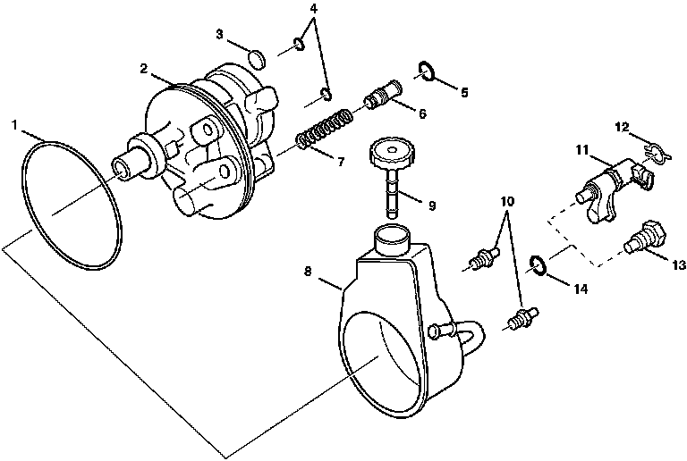

Power Steering Pump: Diagrams
Power Steering Pump Disassembled View (Regular)
Power Steering Pump Disassembled View (Regular):

1 - O-ring Seal
2 - Hydraulic Pump Housing Assembly
3 - Magnet
4 - O-ring Seals
5 - Rectangular Section Seal
6 - Control Valve
7 - Flow Control Spring
8 - Reservoir Assembly
9 - Reservoir Capstick
10 - Pump Mounting Studs
11 - Variable Assist Steering Actuator
12 - Retaining Ring
13 - Connector and Fitting Assembly
14 - O-ring Seal